Introducción
Ficheros de datos permitidos
Creación de bases de datos
Metafiles
Configuración
Variables
Rejilla principal de Variables
Microdatos
Rejilla principal de Microdatos
Reglas
Evaluación de
Rangos y Filtros
Rejilla principal de Rangos y Filtros
Histograma de porcentajes de error
Existencia de variables en reglas
Evaluación de
otras Reglas
Rejilla principal de Otras Reglas (Test)
Histograma de porcentajes de error
Imputación
Rejilla principal de Imputación
Información de variables de imputación
Estadísticas
¿Qué es TEIDE?Qué es TEIDE?
TEIDE es una aplicación informática...
...que pretende automatizar los procesos
de edición e imputación de datos
estadísticos.
...con un marcado enfoque visual, donde todos los elementos
que intervienen son mostrados a través
de controles gráficos.
...de ayuda al técnico estadístico, nunca un sustituto,
e intenta proporcionar funcionalidades
para el estudio de encuestas.
...cuya metodología principal de imputación es la del registro donante
junto con la filosofía desarrollada
por Fellegi y Holt.
El uso de la aplicación es muy sencillo. Para realizar la
imputación de un conjunto de datos, debemos ir ejecutando distintos procesos
hasta llegar al final.
El esquema siguiente muestra la manera en la que se ha de trabajar en TEIDE
para obtener los resultados finales.
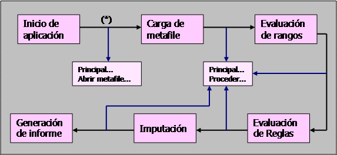
En cualquier momento de este
proceso, podremos acceder a la opción Principal... - Cerrar Metafile..., y de esta manera conseguiremos
"reiniciar" el sistema volviendo al punto marcado con (*).
Por otra parte, también podremos acceder Principal... - Opciones... para
cambiar la configuración del sistema. Esto habrá que realizarlo después de
haber cargado el metafile correspondiente.
Dentro de cada uno de los distintos procesos de la aplicación, tenemos una gran
variedad de opciones que se explican en los siguientes capítulos de la ayuda.
También
decir que Teide2 se puede ejecutar en modo BATCH, es decir poniendo Teide2 [nombremetafile] se ejecutará toda la aplicación sin la
necesidad de colaboración por parte del usuario.
Ej: Teide2 sample.vme (abre y carga los datos indicados en el metafile, así como los distintos procesos de la
aplicación).
Ficheros
permitidos
TEIDE2
permite leer ficheros en Excel (.xls), Access (.mdb), en XML (.xml) y en Oracle. Los
ficheros en office sólo son permitidos en Windows, en las demás plataformas no
se pueden utilizar. Si se tiene Office 2007 TEIDE2 también permite leer
ficheros en Excel 2007 (.xlsx) y en Access 2007 (.accdb).
Metafiles
Abrir
Metafile
Este cuadro de diálogo permite cargar un metafile
de disco.
Selección del Metafile
Permite buscar el metafile deseado
recorriendo el disco.
Este cuadro contiene tres controles básicos para la navegación y selección del metafile:
Selección de la unidad de trabajo
Selección del directorio de trabajo
Listado de metafiles existentes en el
directorio actual
Vista previa del Metafile
Permite previsualizar el metafile seleccionado.
Estructura de un metafile
Un metafile es un fichero de texto plano
ASCII que permite obtener información sobre otros ficheros.
La estructura está basada en tags
(identificadores destacados) con un valor asociado.
Los tags del metafile
son los siguientes:
<NOM> Nombre que se le quiere dar al conjunto de
datos.
<RBD> Ruta completa del fichero de base de datos.
data\fichero.mdb ó data\fichero.accdb se considera una base de
datos Access
data\fichero.xls ó data\fichero.xlsx se considera una base de
datos Excel
data\CARPETA\
se considera la carpeta donde se encuentra todos los ficheros XML (.xml)
ORACLE ó Oracle ó oracle se considera base de
datos Oracle
En otro
caso
se considera
error
NOTA: las extensiones
.xlsx y .accdb sólo se
permite si está instalado Office 2007.
<VAR> Nombre de la tabla de variables.
<MD1> Nombre de la primera tabla de microdatos.
<MD2> Nombre de la segunda tabla de microdatos.
<MD3> Nombre de la tercera tabla de microdatos.
...
<MDn> Nombre
de la n-ésima tabla de microdatos.
<EDT> Nombre de la tabla de reglas.
<MIS> Nombre de la tabla de valores missing.
<KEY> Nombre de la variable identificadora (key).
El orden de
especificación de los tags no es relevante,
pero sí deben estar todos completos para el que el metafile
sea correcto.
NOTA: los valores deben ir entre comillas dobles (“ “).
Figura de ejemplo
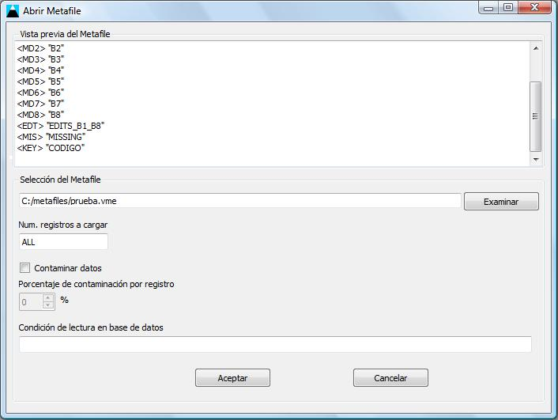
Nuevo
Metafile
Este cuadro permite escribir un nuevo metafile
en disco.
Editor del Metafile
Permite escribir texto plano con la descripción del metafile.
Nombre del Metafile
Permite especificar el nombre del fichero donde se guardará la
información del metafile.
Este cuadro contiene dos controles básicos:
Cuadro de texto para el nombre del metafile
Botón para seleccionar el destino del metafile
Gestión de tags
El conjunto de botones permiten insertar los diferentes tags en el metafile. Una vez
insertado el tag se deberá especificar su valor
sustituyendo la cadena de muestra por el valor adecuado.
Figura de ejemplo
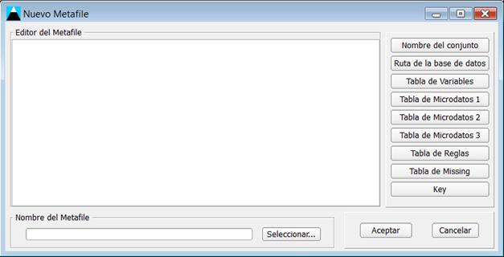
Cargando
Metafile
Este cuadro permite visualizar el proceso de carga del metafile.
Listado de operaciones
Cada línea de la ventana principal hace referencia a una tarea que se está
realizando durante la fase de carga.
Figura de ejemplo
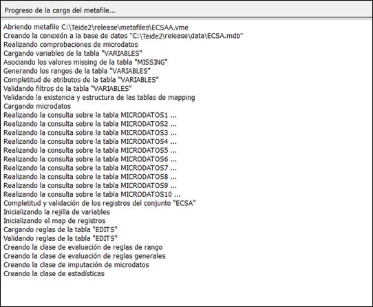
Configuración
Esta ventana permite cambiar las opciones generales de edición e
imputación del programa.
Missing
Este cuadro permite cambiar las opciones de validación de valores missing.
Si se necesita que los valores missing sean aceptados
como correctos, independientemente de lo que indiquen sus atributos en las
variables, podemos realizarlo en este cuadro.
Existen cuatro casillas de validación, una para cada valor missing.
Considerar siempre los valores NO_PROCEDE como válidos
Considerar siempre los valores NO_SABE como válidos
Considerar siempre los valores NO_CONTESTA como válidos
Considerar siempre los valores NS_NC como válidos
Todas estas casillas están a falso por defecto. El
cambio de alguna de ellas supone obviar los errores que puedan producir los
valores missing.
Figura de ejemplo
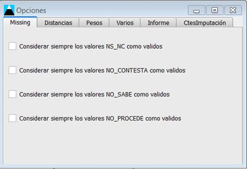
Distancias
Este cuadro permite cambiar las opciones de distancias.
Permite modificar los parámetros asociados al cálculo de distancias
entre registros.
Los cuadros de texto permiten cambiar los parámetros desde 0 hasta 100.
Las tres distancias que se pueden encontrar en este apartado son las
siguientes:
Distancia alfa
Es la distancia que existe entre las variables básicas
de imputación
de dos registros.
Distancia beta
Es la distancia que existe entre las variables
extendidas de imputación
de dos registros.
Distancia gamma
Es la distancia que existe entre las otras variables de dos registros.
La modificación de los pesos permite asignar mayor importancia a unas
distancias que a otras en el cálculo final de distancia.
Los botones asociados de Min y Max permiten ir a los valores
mínimos y máximos de manera sencilla.
También permite modificar la forma de calcular las distancias
entre registros, por defecto lo hace mediante sumas.
Figura de ejemplo
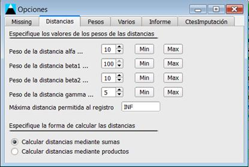
Pesos
Este cuadro nos permite cambiar el método de asignación de pesos a
variables.
Cada variable deberá tener un peso asignado durante el proceso de imputación, de
manera que esto le dará una mayor importancia en función de si su valor es
mayor. En este cuadro existen dos posibilidades como método de asignación de
pesos a variables.
Peso de imputación + Aparición en reglas
Este método asigna el peso a cada variable como la suma de su propio peso de
imputación (dato de entrada que proviene de la tabla de variables) y un valor
normalizado en relación al número de reglas en los que aparece la variable (una
medida de importancia).
Aleatorio
Este método, como su nombre indica, asigna un valor aleatorio a los pesos de
las variables. Esto permite dar un matiz no determinista al proceso de
imputación que puede, en ciertos casos, ser beneficioso.
Los pesos de imputación se representan internamente como valores reales normalizados
entre 0 y 1.
Figura de ejemplo
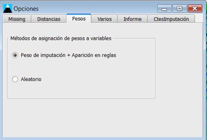
Varios
Este cuadro nos permite indicar si queremos ignorar las reglas
explícitas y/o ignorar las variables no imputables.
Ignorar las reglas explícitas
Este método ignora las reglas especificadas.
Ignorar variables no imputables
Este método ignora las variables que se han asignado como no imputables.
Figura de ejemplo
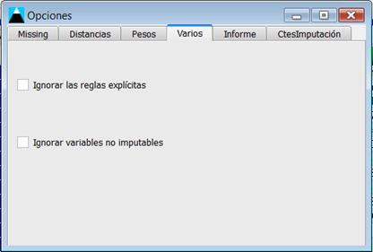
Informe
Este cuadro nos permite indicar como queremos que se muestre la
información del informe estadístico.
Resumido
Omite algunos detalles como son:
Sección 16 y 17: no
se muestran los valores cero. Ver descripción.
Sección 18: no se
muestra. Ver descripción.
Extenso
Muestra toda la información.
Figura de ejemplo
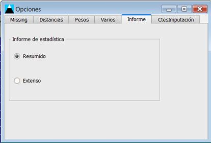
CtesImputación
Este cuadro nos permite indicar cuantos registros donantes vamos a
tomar, por defecto es 500 o el total de donantes si esta cifra es menor a 500. También
le podemos indicar cuantas variables de las reglas a imputar, como máximo,
debemos considerar para realizar las combinaciones en la imputación de un
registro, por defecto es 10.
Figura de ejemplo
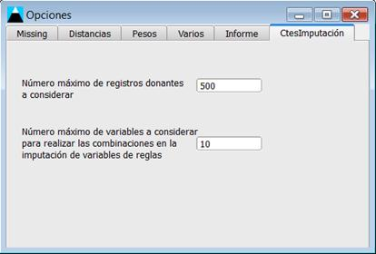
Chequear población nos permite comparar diferentes bases de datos
o tablas de datos con variables en común y relacionadas.
Una vez hemos cargados los datos
de una base de datos, en el Menú principal se nos da la opción de Chequear
población. Pulsamos sobre esta elección y nos pregunta lo siguiente:
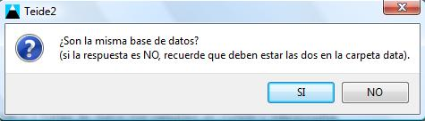
Si las tablas a chequear están o
no en la misma base de datos. Teniendo en cuenta que al menos tienen que estar
en la carpeta data. A continuación se muestra la siguiente ventana dependiendo
si se ha contestado SI ó NO.
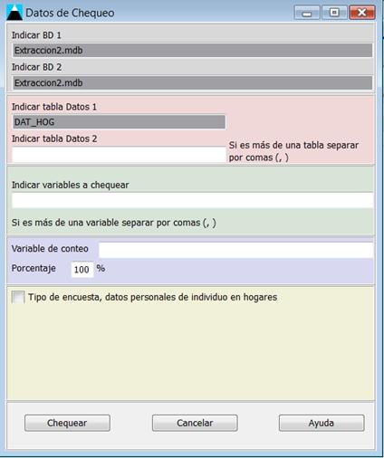 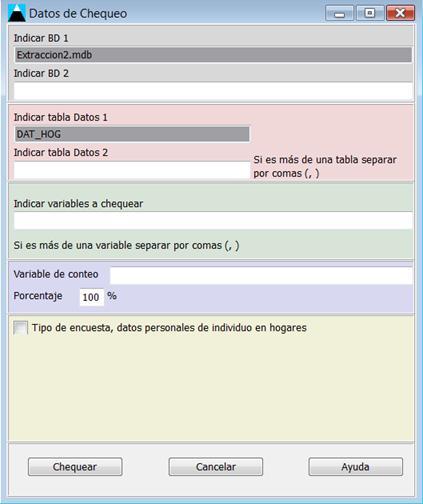
Respuesta SI (misma base de datos)
Repuesta NO (no misma base de datos)
Se tomará como defecto la base
de datos y las tablas de datos abiertas como datos 1, para los datos 2 (base de
datas y tablas de datos) se incluirá manualmente en los lugares indicados.
También se indicará las variables a chequear, y por último de forma opcional la
variable que indica (Variable de conteo) cuántas veces se deben repetir esta
combinaciones de variables indicadas.
Decir que el Chequeo de
población consiste en chequear que los valores de unas variables de unos datos
1 se encuentren en otras tablas de datos 2 y también si se encuentran tantas
veces como indica la variable de conteo. El último panel es para un tipo de encuesta
especial, son aquellas en las que para calcular el número de repeticiones,
además de disponer de la variable de conteo y de un porcentaje, también
indicaremos una condición. Poniendo las variables, las cuales deben estar en la
primera base de datos, y los valores a cumplir.
Una vez se han introducidos los
valores indicados:
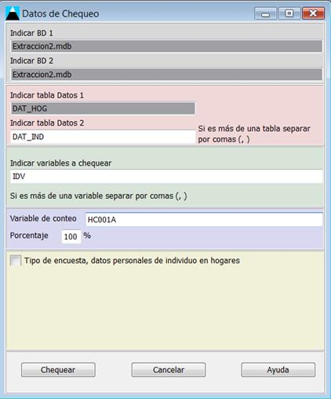 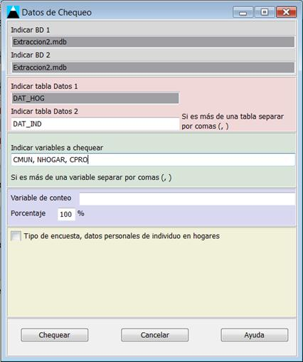
Con variable de
conteo
Sin variable de conteo
Tipo de encuesta especial:
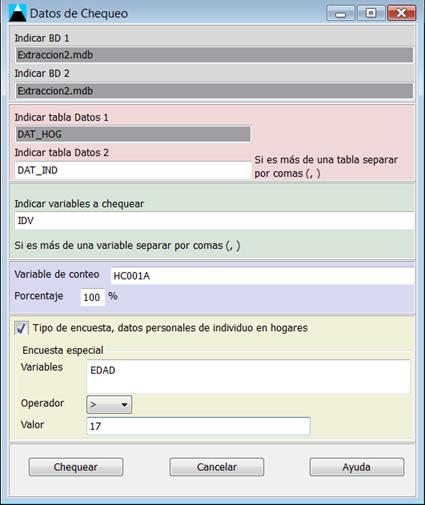
Se obtendrán resultados como los
siguientes:
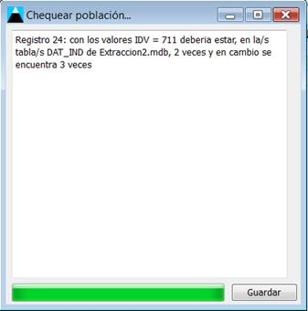 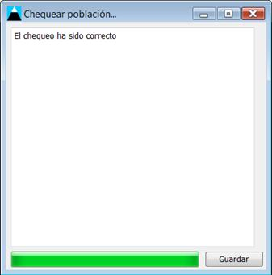
NOTA: las variables a estudiar
deben ser distintas de IGNORABLES, ya que si son ignorables
TEIDE2 entenderá que no se encuentran en las tablas de datos.
Variables
Rejilla
principal de Variables principal de Variables
Esta rejilla permite visualizar toda la información referente a
las variables que han sido cargadas en la aplicación.
Las filas
Cada fila representa una variable.
Las columnas
Cada columna representa un atributo de
variable.
Los atributos de variable son los siguientes:
NOMBRE: Nombre corto de la variable.
TIPO: Tipo de la variable. (0:Continua,
1:Discreta en Lista, 2:Discreta en Rango, 3:Alfanumérica)
RANGO: Posibles valores de la variable.
MAPPING: Nombre de la tabla en la que se encuentran las relaciones entre
códigos y literales de las variables.
INFO_VARIABLE: Texto libre con explicación de la variable.
Missings: se pone tantas
columnas como valores missings tengamos en la tabla Missing. Debe haber en la tabla Missing
y por lo tanto en la tabla variables un missing como
mínimo, cuyo valor debe ser NO_PROCEDE o No_Procede o
NoProcede. Ejemplo de otros valores missings NO_SABE, NO_CONTESTA, NS_NC.
FILTRO:
Condición necesaria para que la variable pueda ser respondida.
INFO_FILTRO: Texto libre con explicación del filtro.
SENTIDO_FILTRO: Sentido del filtro a tener en cuenta (a, b,
c).
a : if (not filtro) then
(variable = NO_PROCEDE).
b : if (filtro) then (variable != NO_PROCEDE).
c
: (filtro) ó
(variable != NO_PROCEDE), es decir:
if (not filtro) then (variable
= NO_PROCEDE).
if (filtro)
then (variable != NO_PROCEDE).
PESO: Ponderación de la variable.
IMPUTABLE: Indica si la variable puede ser imputada.
IMP_NUM: Indica que
tipo de imputación se realiza, por defecto es por medio del registro donante.
Existe un atributo que es ID, que no proporciona información relevante en cuanto al
estudio estadístico, aunque es importante porque es el identificador de la
variable que coincide con el identificador que existe en la tabla de la base de
datos.
Figura de ejemplo
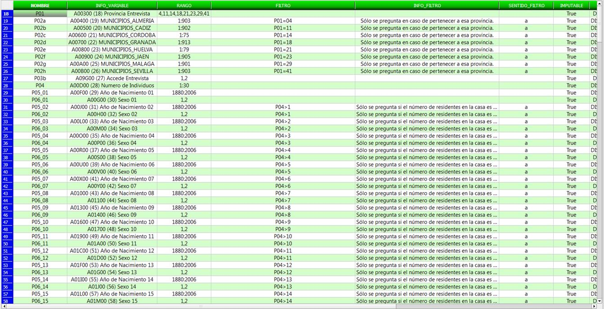
Funcionalidades
Sentido_Filtro
Si hacemos click sobre alguna entrada completa del
campo SENTIDO_FILTRO, se muestra la información sobre lo que significa ese
sentido.
Figura de ejemplo
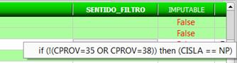
Mapping
Si hacemos doble click sobre alguna entrada completa
del campo MAPPING, se abrirá una ventana que nos da la relación entre códigos
numéricos y literales de la variable actual. En caso de que esta ventana no se
abra, puede deberse a que no se ha definido la tabla mapping,
porque no exista la tabla mapping en la base de datos
o porque la tabla mapping se encuentre en un formato
no válido.
Figura de ejemplo

Missing
Si hacemos doble click sobre alguna entrada completa
de los campos NO_PROCEDE, NO_SABE, NO_CONTESTA o NS_NC, se abrirá una ventana
que nos da la relación entre códigos numéricos y literales de los valores missing utilizados en la encuesta actual. En caso de que
esta ventana no se abra, puede deberse a que no se ha definido la tabla missing, a que no exista la tabla missing
en la base de datos o a que la tabla missing se
encuentre en un formato no válido.
Figura de ejemplo
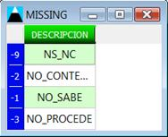
IMP_NUM
En esta columna las opciones que tenemos son las siguientes:
MEDIANA: Es el valor de la
variable que separa en dos grupos los valores de las variables, ordenadas de
menor a mayor. También se puede indicar el
número de donantes a tener en cuenta, en el caso de no especificar se tomará el
número de donantes como 10.
MEDIA_R: Se obtiene calculando la
media de los valores de la variable salvo un porcentaje de los más grandes y el
mismo % de los más pequeños. También se puede indicar el número de donantes a
tener en cuenta y el número de valores recortados, en el caso de no especificar
se tomará el número de donantes como 10 y el número de valores recortados como
2.
MEDIA: Es la suma de todos los valores de la
variable dividida entre el número total de elementos. También se puede indicar
el número de donantes a tener en cuenta, en el caso de no especificar se tomará
el número de donantes como 10.
MODA: Es el valor de la variable que más
veces se repite, es decir, el valor que tenga mayor frecuencia absoluta.
También se puede indicar el número de donantes a tener en cuenta, en el caso de
no especificar se tomará el número de donantes como 10.
Ecuación de regresión: Se puede
poner una función de regresión constituida por números, variables, sumas,
restas y productos.
Campo vacío: En
el caso de que el campo esté vacío la aplicación realizará la imputación
mediante el registro donante.
Figura de ejemplo
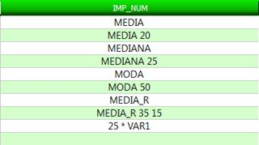
Este panel permite navegar por la rejilla principal de variables.
Ir a variable por número
Este cuadro permite acceder a una variable en la rejilla principal
de variables a través de su número ordinal.
Ir a variable por nombre
Este cuadro permite acceder a una variable en la rejilla principal
de variables a través de su nombre. El cuadro desplegable permite seleccionar
una variable o también escribir su nombre y accederemos a ella de manera más
rápida.
Ir a atributo
Este cuadro permite acceder a un atributo de variable en la
rejilla principal de variables a través de su nombre. El cuadro desplegable
permite seleccionar un atributo o también escribir su nombre y accederemos a él
de manera más rápida.
Figura de ejemplo
Barra
de estado de Variables de estado
Esta barra permite conocer información asociada a las variables.
Panel 1
Este panel permite conocer el número total de variables numéricas
cargadas (que coincide con el número de filas existentes en la rejilla
principal de variables) y el número de atributos que contiene cada variable
(que coincide con el número de columnas existentes en la rejilla principal de
variables).
Panel 2
Este panel permite conocer una pequeña descripción de cada uno de
los atributos de variable. A medida que cambiamos de columna en la rejilla
principal de variables esta información va actualizándose también para
ofrecernos un texto explicativo del mismo.
Panel 3
Este panel permite conocer el número ordinal de la variable activa
en la rejilla principal de variables en relación con el total, así como el
atributo que está activo entre paréntesis.
Figura de ejemplo
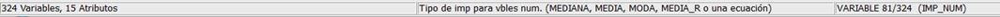
Microdatos
Rejilla
principal de Microdatos
Esta rejilla permite visualizar toda la información referente a
los microdatos que han sido cargados en la
aplicación.
Las filas
Cada fila representa un registro.
Las columnas
Cada columna representa una variable numérica.
En esta rejilla sólo están presentes las variables numéricas. Los valores que
se muestran son siempre codificados (valores numéricos).
Existe un atributo que es ID, que no proporciona información
relevante en cuanto al estudio estadístico, aunque es importante porque es el
identificador del registro que coincide con el identificador que existe en la
tabla de la base de datos.
Figura de ejemplo
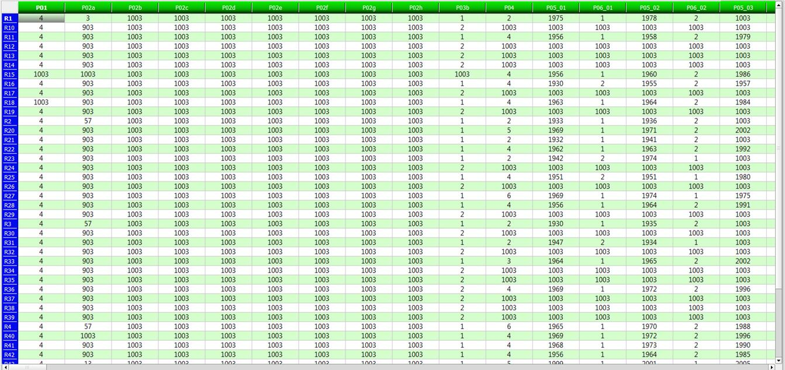
Rejilla de Variables referente a Microdatos de Variable
Esta rejilla permite visualizar la información asociada a la
variable activa en la rejilla principal de microdatos.
Básicamente esta rejilla es un recorte de la rejilla principal de variables en
la pestaña de variables para la variable activa en la rejilla principal de microdatos. A medida que cambiamos de variable en la
rejilla principal de microdatos, la información de la
variable actual se actualiza en esta rejilla lo que permite visualizar sus
atributos asociados.
Figura de ejemplo
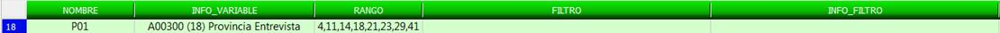
Navegadores de Microdatos
Este panel permite navegar por la rejilla principal de microdatos.
Ir a registro
Este cuadro permite acceder a un registro en la rejilla principal
de microdatos a través de su número ordinal o través
del nombre (ID) del registro.
Ir a variable
Este cuadro permite acceder a una variable en la rejilla principal
de microdatos a través de su nombre. El cuadro
desplegable permite seleccionar una variable o también escribir su nombre y
accederemos a ella de manera más rápida. También se accede a una variable indicando
la posición de esta mediante un número.
Figura de ejemplo
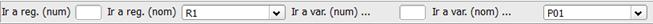
Cuadro
de Mapping
Este cuadro permite visualizar qué literal está asociado a un
código numérico determinado.
A medida que nos movemos por las distintas celdas de la rejilla principal de microdatos, la información del mapping
del valor activo en la rejilla se actualiza en el cuadro. Cuando no es posible
acceder al mapping de una variable, bien porque no
está definida la tabla, bien porque hay errores en su estructura o bien porque
el valor no está contemplado, aparece un mensaje en el cuadro indicando
"NO HAY MAPPING DISPONIBLE".
Figura de ejemplo
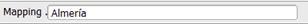
Barra
de estado de Microdatos de estado
Esta barra permite conocer información asociada a los microdatos.
Panel 1
Este panel permite conocer el número total de registros cargados
(que coincide con el número de filas existentes en la rejilla principal de microdatos) y el número total de variables alfanuméricas
(que coincide con el número de columnas existentes en la rejilla secundaria de microdatos).
Panel 2
Este panel permite conocer el número ordinal del registro activo
en la rejilla principal de microdatos en relación con
el total. Y el número de la variable activa.
Figura de ejemplo
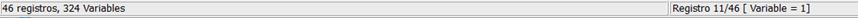
Reglas
Esta rejilla permite visualizar toda la información referente a
las reglas que han sido cargados en la aplicación.
Las filas
Cada fila representa una regla.
Las columnas
Cada columna representa un atributo de la regla.
Los atributos de las reglas son los siguientes:
CONDICION: Escritura de la regla en la sintaxis
adecuada.
DESCRIPCION: Texto libre explicativo de la regla.
Existe un atributo que es ID, que no proporciona información
relevante en cuanto al estudio estadístico, aunque es importante porque es el
identificador de la regla que coincide con el identificador que existe en la
tabla de la base de datos.
Figura de ejemplo
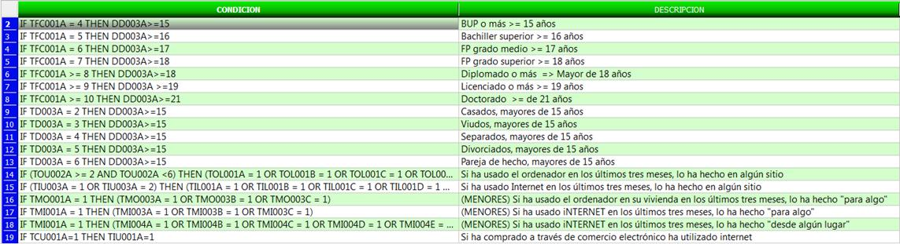
Este panel permite la inserción, borrado y modificación de las
reglas.
Cuadro de edición
Este cuadro permite visualizar y modificar la condición de una
regla. A medida que cambiamos de regla en la rejilla principal de reglas, este
cuadro se actualiza para mostrar la condición de la regla activa. El cuadro
puede ser modificado a necesidad del usuario para conseguir una condición
distinta de la regla.
Selección de variable
La lista desplegable de variable nos permite seleccionar una
variable para insertarla en la condición de la regla.
Selección de operador
La lista desplegable de operador nos permite seleccionar un
operador para insertarlo en la condición de la regla.
Selección de valor missing
La lista desplegable de missing nos
permite seleccionar un valor missing para insertarlo
en la condición de la regla.
Botones de gestión
MODIFICACIÓN: Permite aplicar los cambios realizados en
la condición de la regla de manera permanente.
INSERCIÓN: Permite insertar una nueva regla.
BORRADO: Permite borrar la regla activa en la rejilla principal de reglas.
Figura de ejemplo
Validación
Sintáctica
Se dice que una regla es sintácticamente correcta si su estructura
está de acuerdo con las reglas sintácticas definidas.
Se dice que una regla es léxicamente
correcta si utiliza elementos léxicos correctos, es decir, los operadores que
utiliza están definidos y las variables que usa existen.
Rejilla
de Variable referente a Reglas de Variable
Esta rejilla permite visualizar la información asociada a la
variable que hayamos seleccionado en la lista desplegable de selección de
variable al modificar la condición de la regla activa en la rejilla principal
de reglas. Esto es muy útil ya que podemos conocer los atributos que tiene la
variable y apoyarnos en esta información para escribir la condición.
Figura de ejemplo
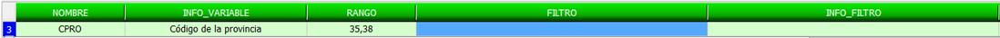
Panel
de validación de validación
Este panel nos permite validar las reglas. Una vez que hayamos
introducido una nueva regla o modificado una regla existente, hay un mecanismo
que valida la condición escrita. Esta validación consta de los siguientes
elementos.
VALIDACIÓN SINTÁCTICA: Permite conocer si la regla es sintácticamente correcta.
VALIDACIÓN LÉXICA: Permite conocer si al regla es léxicamente correcta.
Cada uno de estos elementos de validación se actualiza a medida que vamos
cambiando de regla en la rejilla principal de reglas. La manera de expresar que
la validación es correcta es a través de una flecha verde y la
validación incorrecta a través de una cruz roja.
Figura de ejemplo

En el caso de de una cruz roja se puede
pulsar sobre ella y nos aportará algo de ayuda sobre el error.
Navegadores
de Reglas
Este panel permite navegar por la rejilla principal de reglas.
Ir a regla
Este cuadro permite acceder a una regla en la rejilla principal de
reglas a través de su número ordinal.
Ir a la siguiente Regla incorrecta
Este botón permite ir accediendo de manera consecutiva y circular
a las reglas que estén incorrectas (ya sea por validación léxica y/o
sintáctica). Cuando no existen reglas incorrectas, pulsar este botón no tiene
ningún efecto.
Filtrar Reglas
Este cuadro permite ir accediendo de manera consecutiva y circular
a aquellas reglas que contengan la variable que se debe especificar
previamente. Si no existe ninguna regla con dicha variable, aparece un mensaje
de NO ENCONTRADO!.
Figura de ejemplo
Barra
de estado referente a Reglas
de estado
Esta barra permite conocer información asociada a las reglas.
Panel 1
Este panel permite conocer el número total de reglas cargadas en el
sistema, así como un desglose del número de reglas validadas (con su porcentaje
correspondiente) y el número de reglas no validadas (con su porcentaje
correspondiente).
Panel 2
Este panel permite conocer el número ordinal de la regla activa en
la rejilla principal de reglas en relación con el total.
Figura de ejemplo
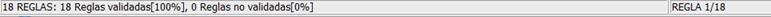
Evaluación de
Rangos y Filtros
Rejilla
principal de Rangos y Filtros principal de Rangos
Esta rejilla permite visualizar toda la información referente a la
evaluación de rangos y filtros.
Las filas
Cada fila representa un registro.
Las columnas
Cada columna representa una variable.
Las celdas
Cada celda de la rejilla contiene un valor True ó False en
función de si el registro cumple el rango y el filtro definido por la variable.
En la primera columna se representan los identificadores de los registros y por
el total de errores (valores False) encontrados para un registro, junto con su
porcentaje asociado entre paréntesis.
En la primera fila los nombres de las variables y el total de
errores (valores False) encontrados para una variable, junto con su porcentaje
asociado entre paréntesis.
Código de colores
Las celdas que contienen errores se representan en color
rojo.
Los registros y variables excluidos se representan en color naranja.
Los registros sin errores se representan en color azul.
Figura de ejemplo
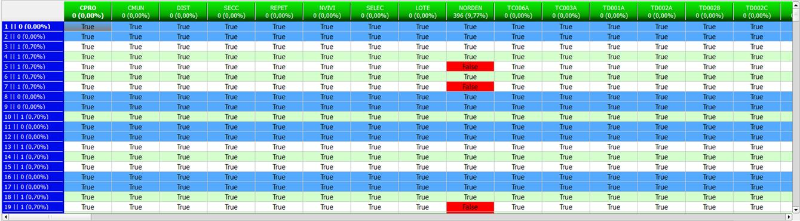
Funcionalidades
Desplazamiento
Existe un mecanismo para poder desplazarnos sobre la rejilla de manera más
cómoda. Estando sobre cualquier celda activa, si pulsamos la tecla ALT y
cualquier cursor de desplazamiento, accederemos a la celda más próxima que
contiene algún error.
Cambiar valor de un microdato
Si queremos cambiar el valor de un microdato, basta
con situarnos en la celda correspondiente y hacer doble click
con el ratón y nos aparecerá un ventana con las opciones para modificar su
valor.
Figura de ejemplo
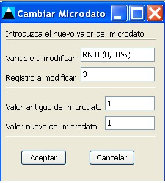
Submenu
Pulsando el botón derecho del ratón sobre esta rejilla se muestra un pequeño
menú, que nos da la opción de:
Copiar identificador de registro:
copia en el portapapeles lo que aparece en la primera columna de la rejilla.
Copiar identificador de
variable: copia en el portapapeles lo que hay en la primera fila de la rejilla.
Aumentar el ancho de las
columnas: aumenta el ancho de las columnas.
Disminuir el ancho de
las columnas: disminuye el ancho de las columnas.
Figura de ejemplo
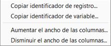
Panel
de exclusión de variables y registros exclusión
Este panel permite excluir variables y registros con un porcentaje
de error determinado en la rejilla principal de rangos y filtros.
Excluir registros
Aquellos registros que tengan un porcentaje de error superior al
indicado en el cuadro de porcentaje de error de registros serán excluidos. Sólo
es necesario indicar el umbral deseado en el cuadro de edición y pulsar el
botón Aplicar Exclusión.
Excluir variables
Aquellas variables que tengan un porcentaje de error superior al
indicado en el cuadro de porcentaje de error de variables serán excluidas. Sólo
es necesario indicar el umbral deseado en el cuadro de edición y pulsar el
botón Aplicar Exclusión.
Figura de ejemplo
Histograma
de porcentajes de error en Rangos y Filtros de porcentajes de error
Este histograma permite la visualización gráfica de los
porcentajes de error en rango tanto de los registros como de las variables.
Histograma de registros
En este histograma, se representan los registros en el eje X y los
porcentajes de error en el eje Y.
Cada registro viene representado por su número ordinal correspondiente.
El histograma está escalado de 100 en 100 registros, para que sea más sencilla
su visualización.
Histograma de variables
En este histograma, se representan las variables en el eje X y los
porcentajes de error en el eje Y.
Cada variable viene representada por su número ordinal correspondiente.
El histograma está escalado de 100 en 100 registros, para que sea más sencilla
su visualización.
Funcionalidades
Cambio de histogramas
Para cambiar entre el histograma de registros y el histograma de variables hay
que hacer doble click en el histograma. Una vez hecho
esto se podrá ver cómo cambian los valores del histograma y el título del
mismo.
Desplazamiento
Para desplazarnos sobre el histograma, podemos hacerlo mediante los botones
situados en la parte superior central del histograma. Se visualizarán los 100
siguientes o los 100 anteriores.
Figura de ejemplo
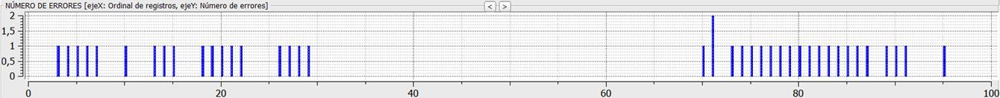
Rejilla de Registro referente a la
rejilla principal de Rangos y Filtros
Esta rejilla permite visualizar la información asociada al
registro activo en la rejilla principal de rangos y filtros.
Básicamente esta rejilla es un recorte de la rejilla principal de microdatos en la pestaña de microdatos
para el registro activo en la rejilla principal de rangos y filtros. A medida
que cambiamos de registro en la rejilla principal de rangos y filtros, la
información del registro actual se actualiza en esta rejilla lo que permite
visualizar sus microdatos asociados.
Figura de ejemplo
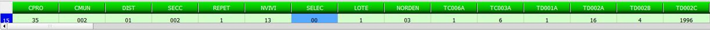
Funcionalidades
Ir a una variable
Para ir a una variable determinada hacemos doble click
sobre esta tabla y nos saldrá una pequeña ventana donde podemos indicar por
nombre o número a la variable que queremos acceder.
Figura de ejemplo
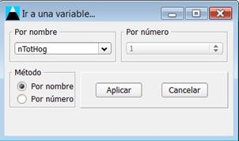
Rejilla de Variable referente a la
rejilla principal de Rangos y Filtros
Esta rejilla permite visualizar la información asociada a la
variable activa en la rejilla principal de rangos y filtros.
Básicamente esta rejilla es un recorte de la rejilla principal de variables en
la pestaña de variables para la variable activa en la rejilla principal de
rangos y filtros. A medida que cambiamos de variable en la rejilla principal de
rangos y filtros, la información de la variable actual se actualiza en esta
rejilla lo que permite visualizar sus atributos asociados.
Figura de ejemplo
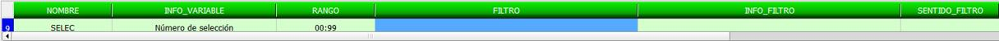
Funcionalidades
Información adicional
Si hacemos doble click con el ratón sobre la columna
FILTRO nos saldrá un mensaje con el filtro. Si el doble click
es sobre una columna missing nos mostrará la tabla missing con los valores que toma cada uno. Y por último si
el doble click es sobre la columna mapping y dispone de tabla mapping
esta se mostrará.
Existencia
de variables en reglas
Este elemento permite conocer el número de reglas en las que se
encuentra presente una determinada variable.
Número de filtros con variable
Indica el número de filtros en los que está presente la variable activa en la
rejilla principal de rangos y filtros. Al menos, una variable tiene que estar
presente en un filtro que es el suyo propio.
Número de reglas con variable
Indica el número de reglas explícitas en las que está presente la variable
activa en la rejilla principal de rangos.
Figura de ejemplo
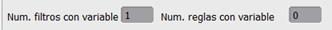
Navegadores
en Rangos y Filtros
Este panel permite navegar por la rejilla principal de rangos y
filtros.
Ir a registro
Este cuadro permite acceder a un registro en la rejilla principal
de rangos a través de su número ordinal o través de nombre (ID) del registro.
Ir a variable por número
Este cuadro permite acceder a una variable en la rejilla principal
de rangos y filtros a través de su número ordinal.
Ir a variable por nombre
Este cuadro permite acceder a una variable en la rejilla principal
de rangos y filtros a través de su nombre. El cuadro desplegable permite
seleccionar una variable o también escribir su nombre y accederemos a ella de
manera más rápida.
Figura de ejemplo
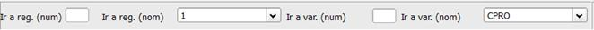
Barra de estado de Rangos y Filtros
Esta barra permite conocer información asociada a los rangos y
filtros.
Panel 1
Este panel permite conocer el número ordinal del registro activo
en la rejilla principal de rangos y filtros en función del número total de
registros, así como el número ordinal de la variable activa en la rejilla
principal de rangos y filtros.
Figura de ejemplo
Evaluación de otras Reglas
Rejilla principal de Otras Reglas
(Test)
Esta rejilla permite visualizar toda la información referente a la
evaluación de reglas explícitas.
Las filas
Cada fila representa un registro.
Las columnas
Cada columna representa una regla explícita.
Las celdas
Cada celda de la rejilla contiene un valor True ó False en
función de si el registro cumple la regla explícita.
En la primera columna se representan los identificadores de los registros y el
total de errores (valores False) encontrados para un registro, junto con su
porcentaje asociado entre paréntesis.
En la primera fila los identificadores de las reglas explícitas y
el total de errores (valores False) encontrados para una regla explícita, junto
con su porcentaje asociado entre paréntesis.
Código de colores
Las celdas que contienen errores se representan en color
rojo.
Los registros y reglas explícitas excluidas se representan en color
naranja.
Los registros sin errores se representan en color azul.
Figura de ejemplo
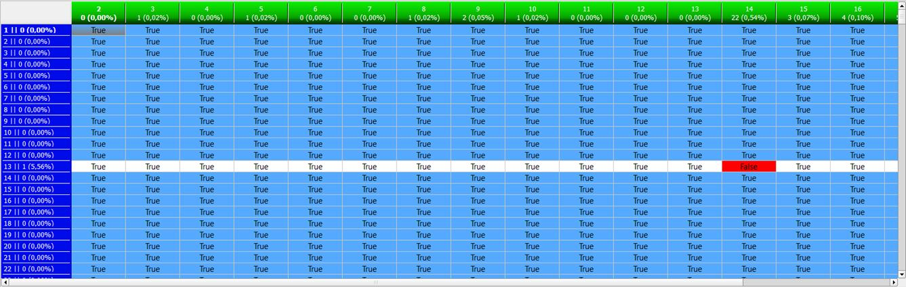
Funcionalidades
Desplazamiento
Existe un mecanismo para poder desplazarnos sobre la rejilla de manera más
cómoda. Estando sobre cualquier celda activa, si pulsamos la tecla ALT y
cualquier cursor de desplazamiento, accederemos a la celda más próxima que
contiene algún error.
Cambiar valor de un microdato
Si queremos cambiar el valor de un microdato, basta
con situarnos en la celda correspondiente y hacer doble click
con el ratón y nos aparecerá un ventana con las opciones para modificar su
valor.
Figura de ejemplo
Submenu
Pulsando el botón derecho del ratón sobre esta rejilla se muestra un pequeño
menú, que nos da la opción de:
Copiar identificador de registro:
copia en el portapapeles lo que aparece en la primera columna de la rejilla.
Copiar identificador de
regla: copia en el portapapeles lo que hay en la primera fila de la rejilla.
Aumentar el ancho de las
columnas: aumenta el ancho de las columnas.
Disminuir el ancho de
las columnas: disminuye el ancho de las columnas.
Figura de ejemplo
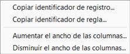
Panel de exclusión de reglas y
registros
Este panel permite excluir reglas explícitas y registros con un
porcentaje de error determinado en la rejilla principal.
Excluir registros
Aquellos registros que tengan un porcentaje de error superior al
indicado en el cuadro de porcentaje de error de registros serán excluidos. Sólo
es necesario indicar el umbral deseado en el cuadro de edición y pulsar el
botón Aplicar Exclusión.
Excluir reglas explícitas
Aquellas reglas explícitas que tengan un porcentaje de error
superior al indicado en el cuadro de porcentaje de error de reglas explícitas
serán excluidas. Sólo es necesario indicar el umbral deseado en el cuadro de
edición y pulsar el botón Aplicar Exclusión.
Figura de ejemplo
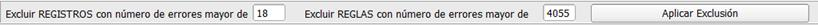
Histograma de porcentajes de error en
Test
Este histograma permite la visualización gráfica de los
porcentajes de error en test tanto de los registros como de las reglas
explícitas.
Histograma de registros
En este histograma, se representan los registros en el eje X y los
porcentajes de error en el eje Y.
Cada registro viene representado por su número ordinal correspondiente.
El histograma está escalado de 100 en 100 registros, para que sea más sencilla
su visualización.
Histograma de reglas explícitas
En este histograma, se representan las reglas explícitas en el eje
X y los porcentajes de error en el eje Y.
Cada regla explícita viene representada por su número ordinal correspondiente.
El histograma está escalado de 100 en 100 registros, para que sea más sencilla
su visualización.
Funcionalidades
Cambio de histogramas
Para cambiar entre el histograma de registros y el histograma de reglas
explícitas hay que hacer doble click en el título del
histograma, es decir, donde pone "PORCENTAJES DE ERROR". Una vez
hecho esto se podrá ver cómo cambian los valores del histograma y el título del
mismo.
Desplazamiento
Para desplazarnos sobre el histograma, podemos hacerlo mediante los botones
situados en la parte superior central del histograma. Se visualizarán los 100
siguientes o los 100 anteriores.
Figura de ejemplo
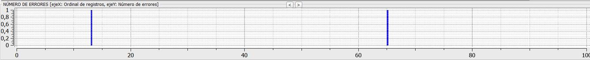
Rejilla de Registro referente a la
rejilla principal de Test
Esta rejilla permite visualizar la información asociada al
registro activo en la rejilla principal de test.
Básicamente esta rejilla es un recorte de la rejilla principal de microdatos en la pestaña de microdatos
para el registro activo en la rejilla principal de test. A medida que cambiamos
de registro en la rejilla principal de test, la información del registro actual
se actualiza en esta rejilla lo que permite visualizar sus microdatos
asociados.
Figura de ejemplo
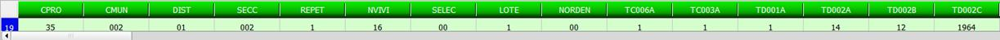
Funcionalidades
Ir a una variable
Para ir a una variable determinada hacemos doble click
sobre esta tabla y nos saldrá una pequeña ventana donde podemos indicar por nombre
o número a la variable que queremos acceder.
Figura de ejemplo
Navegadores de Test
Este panel permite navegar por la rejilla principal de test.
Ir a registro
Este cuadro permite acceder a un registro en la rejilla principal
de rangos a través de su número ordinal o el nombre (ID) del registro.
Ir a regla
Este cuadro permite acceder a una regla explícita en la rejilla
principal de test a través de su número ordinal.
Figura de ejemplo
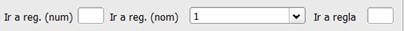
Este cuadro permite conocer la regla que se encuentra activa en la
rejilla principal de test.
A medida que cambiamos de regla en la rejilla principal de test, el cuadro
actualiza la información para mostrar la condición para la regla explícita
activa.
Figura de ejemplo
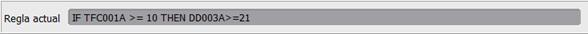
Barra de estado de Test
Esta barra permite conocer información asociada al test.
Panel 1
Este panel permite conocer el número ordinal del registro activo
en la rejilla principal de test, así como el número ordinal de la regla
explícita activa en la rejilla principal de test.
Figura de ejemplo
Imputación
Rejilla
principal de Imputación
Esta rejilla permite visualizar toda la información referente a la
imputación de los microdatos.
Las filas
Cada fila representa un registro.
Las columnas
Cada columna representa una variable.
Las celdas
Cada celda contiene un microdato, que
puede contener el valor original o puede contener un nuevo valor (valor
imputado).
Código de colores
Aquellos microdatos que no han sido modificados se
representan en color
blanco.
Aquellos microdatos que han sido imputados se
representan en color amarillo.
Aquellos registros que no contenían ningún tipo de errores se representan en color azul, es decir los registros donantes.
Aquellos registros que quedaron excluidos se representan en color naranja.
Aquellos registros incorrectos, no se han podido corregir, se
representan en color rojo.
Aquellos microdatos de un registro
incorrecto que Teide no ha podido corregir, pero que puede que sea el culpable
de que ese registro sea incorrecto se representa en color magenta.
Figura de ejemplo
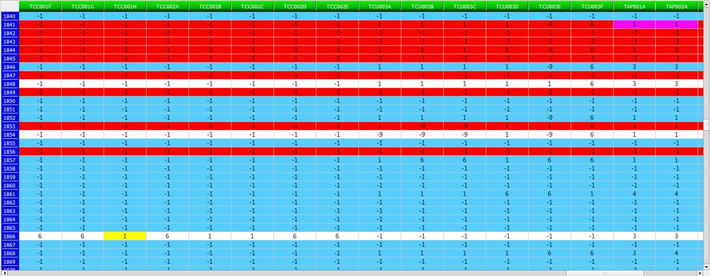
Funcionalidades
Desplazamiento
Existe un mecanismo para poder desplazarnos sobre la rejilla de manera más
cómoda. Estando sobre cualquier celda activa, si pulsamos la tecla ALT y
cualquier cursor de desplazamiento, accederemos a la celda más próxima que
contiene algún valor imputado. Y si pulsamos la tecla SHIFT y
cualquier cursor de desplazamiento, accederemos a la celda más próxima en color
magenta.
Imputación manual
Podemos realizar una imputación manual (cambiar un microdato)
sobre un registro no donante, no excluido y sobre una variable no excluida e
imputable. Sólo tenemos que hacer doble click con el
ratón sobre la variable a imputar manualmente.
Figura de ejemplo
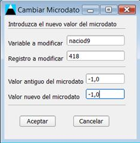
Información
adicional
Si pulsamos con el botón izquierdo del ratón sobre la cabecera
vertical de un registro incorrecto (en rojo), se nos abre un menú con
información sobre ese registro, como puede ser:
Los rangos y/o filtros incorrectos.
Las reglas que
incumple, también información de las variables involucradas en la regla.
El motivo por el cual
no se pudo corregir:
-
No tiene variables básicas a imputar imputables.
-
No tiene un registro donante adecuado.
-
Imputación errónea de variables numéricas.
Figura de ejemplo
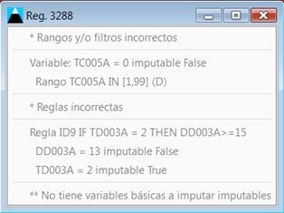
Leyenda
Este panel nos permite visualizar la información de la leyenda de
la rejilla principal de imputación así como volcar la información de los microdatos imputados a la base de datos.
Leyenda
La leyenda consta de seis elementos de explicación con sus
correspondientes colores:
Dato original (color blanco)
Dato imputado (color amarillo)
Registro correcto (color azul)
Registro excluido (color naranja)
Registro incorrecto (color rojo)
Posible dato incorrecto (color magenta)
Figura de ejemplo
Registros Donantes
Este conjunto de controles permite manejar los distintos registros
donantes que hay generados.
Rejilla de Registro
Esta rejilla permite visualizar la información asociada al
registro donante activo.
Básicamente esta rejilla es un recorte de la rejilla principal de microdatos en la pestaña de microdatos
para el registro donante activo. A medida que cambiamos de registro donante, la
información del registro actual se actualiza en esta rejilla lo que permite
visualizar sus microdatos asociados. Así mismo,
cuando cambiamos de registro activo en la rejilla principal de imputación, esta
información también cambia porque cada registro erróneo tiene un registro
donante activo.
Navegador de Registros Donantes
Este pequeño navegador nos permite cambiar entre los distintos
registros donantes que existen. A medida que cambiamos de registro donante, el
conjunto de controles que muestra la información asociada a ellos va cambiando.
Distancia
Indica la proximidad de un registro al registro donante activo.
Cambiar registro donante
Botón que permite cambiar el registro donante.
Registro donante activo
Un cuadro indica el número de registro donante activo en función
del total de registros donantes existentes. A su vez, cuando estamos situados
en el registro donante activo para el registro actual en la rejilla principal
de imputación, existe un mensaje que nos indica que ese registro es el registro
donante asociado. El mensaje es "REGISTRO DONANTE!!".
Figura de ejemplo
Funcionalidades
Ir a una variable
Para ir a una variable determinada hacemos doble click
sobre esta tabla y nos saldrá una pequeña ventana donde podemos indicar por
nombre o número a la variable que queremos acceder.
Figura de ejemplo
Variables Básicas de imputación
Cuando un registro no cumple ciertas reglas, estos generan un
conjunto de variables que son incorrectas de manera directa. Estas variables se
denominan variables básicas de imputación.
Variables
extendidas de imputación
La unión de las componentes conexas de las variables básicas de
imputación en el grafo de reglas definen el conjunto
de variables extendidas de imputación.
Grafo de reglas
En este grafo, el conjunto de vértices lo forman el conjunto de
variables, y existe un arco entre dos vértices si esas dos variables están
presentes en una misma regla.
Rejilla
de Variable referente a la rejilla principal de Imputación
Esta rejilla permite visualizar la información asociada a la
variable activa en la rejilla principal de imputación.
Básicamente esta rejilla es un recorte de la rejilla principal de variables en
la pestaña de variables para la variable activa en la rejilla principal de
imputación. A medida que cambiamos de variable en la rejilla principal de
imputación, la información de la variable actual se actualiza en esta rejilla
lo que permite visualizar sus atributos asociados.
Figura de ejemplo
Funcionalidades
Información adicional
Si hacemos doble click con el ratón sobre la columna
FILTRO nos saldrá un mensaje con el filtro. Si el doble click
es sobre una columna missing nos mostrará la tabla missing con los valores que toma cada uno. Y por último si
el doble click es sobre la columna mapping y dispone de tabla mapping
esta se mostrará.
Información
de variables de imputación
Estos controles permiten tener acceso a las variables que se deben
corregir para un registro.
Número de variables básicas de imputación
Ver descripción.
Número de variables extendidas de imputación
Ver descripción.
Número de variables imputadas
Indica el número de variables que han sido imputadas para el
registro actual.
Esta información va cambiando a medida que vamos cambiando de registro activo
en la rejilla principal de imputación.
Figura de ejemplo
Este cuadro nos permite ver cuál era el valor original para un microdato que ha sido imputado.
Esta información cambia a medida que nos movemos por los distintos valores
imputados de la rejilla principal de imputación.
Cuando el valor no ha sido modificado el cuadro se representa en color
gris. Cuando el valor ha sido modificado el cuadro se representa en color
amarillo.
Figura de ejemplo
Este panel permite navegar por la rejilla principal de imputación.
Ir a registro
Este cuadro permite acceder a un registro en la rejilla principal
de imputación a través de su número ordinal o mediante el desplegable indicando
el nombre (ID) del registro.
Ir a variable
Este cuadro permite acceder a una variable en la rejilla principal
de imputación a través de su nombre. El cuadro desplegable permite seleccionar
una variable o también escribir su nombre y accederemos a ella de manera más
rápida. También permite acceder a una posición determinada a través del número
ordinal de la variable.
Figura de ejemplo
Esta barra permite conocer información asociada a los microdatos imputados.
Panel 1
Este panel permite conocer el número total de registros cargados (que
coincide con el número de filas existentes en la rejilla principal de
imputación) y el número total de variables numéricas (que coincide con el
número de filas existentes en la rejilla principal de imputación).
Panel 2
Este panel permite conocer el número ordinal del registro activo
en la rejilla principal de imputación en relación con el total y el número
ordinal de la variable activa.
Figura de ejemplo
Estadísticas
Informe de Estadísticas
Este informe contiene un resumen de todas las operaciones
realizadas en el proceso de edición e imputación.
Cada fase está recogida en una sección, y además existen otras secciones que
complementan la información.
Las secciones que existen en el informen son las siguientes:
1. SECCIÓN DE VARIABLES.
-> Información referente a las variables cargadas en el sistema.
2. SECCIÓN DE MICRODATOS.
-> Información referente a los microdatos cargados
en el sistema.
3. SECCIÓN DE REGLAS.
-> Información referente a las reglas cargadas en el sistema.
4. SECCIÓN DE RANGOS Y FILTROS.
-> Información referente al proceso de evaluación de rangos.
5. SECCIÓN DE TEST.
-> Información referente al proceso de evaluación de reglas explícitas.
6. SECCIÓN DE IMPUTACIÓN.
-> Información referente al proceso de imputación.
7. LISTADO DE REGLAS DE RANGO.
-> Especificación formal de los rangos en forma de reglas.
8. LISTADO DE REGLAS DE FILTRO.
-> Especificación formal de los filtros en forma de reglas.
9. LISTADO DE REGLAS GENERALES.
-> Especificación formal de las reglas explícitas.
10. INCUMPLIMIENTO DE REGLAS.
-> Información sobre las variables a imputar.
VBI (variables básicas a imputar): son aquellas variables (imputables
o no imputables) que pertenecen a las reglas que incumplen un determinado
registro.
vbi
(variables básicas a imputar imputables): son aquellas variables (imputables)
que pertenecen a las reglas que incumplen un determinado registro.
VEI(C) (variables extendidas cortas a imputar): variables
obtenidas a partir de las básicas, tienen reglas en común. Se tiene que tener
en cuenta si se modifica una básica.
VEI(L) (variables extendidas
largas a imputar): variables obtenidas a partir de las básicas y de las
extendidas cortas, tienen reglas en común. Se tienen que tener en cuenta si se
modifican algunas de las anteriores.
VI: número de variables imputadas.
11.1. VARIABLES IMPUTADAS.
-> Información sobre las variables imputadas en cada registro, así como su
registro donante.
11.2. REGISTROS DONANTES.
-> Listado de los registros donantes y del número de donaciones (registros)
realizadas.
12. PERTENENCIA DE VARIABLES A REGLAS.
-> Información de las variables correspondientes a cada regla.
13. EXCLUSIÓN.
-> Información referente al proceso de exclusión (si lo hubo).
14. COMPARATIVA EN RESUMEN ESTADÍSTICO DE VARIABLES.
-> Comparativa pre/post imputación de las distribuciones de frecuencia de
las variables.
15. LISTADO SOBRE REGISTROS.
-> Listado sobre registros excluidos, incorrectos y warning.
16. LISTADO SOBRE VARIABLES/REGLAS.
-> Listado de los errores de rango, filtro o reglas para cada variable o
regla.
17. IMPUTACIÓN SOBRE VARIABLES.
-> Información sobre la imputación realizada sobre cada variable.
18. CORRESPONDENCIA ENTRE NOMBRE E ÍNDICES DE VARIABLES.
-> Correspondencia entre nombre e índices de variables.
Es posible guardar el informe en formato ASCII a través del botón Guardar
Informe...
Figura de ejemplo
Histogramas de frecuencias
Estos histogramas permiten conocer la distribución de frecuencias
de las variables antes y después del proceso de imputación.
En color azul aparece representada la frecuencia antes de la imputación.
En color verde aparece representada la frecuencia después de la imputación.
El cuadro desplegable nos permite seleccionar aquella variable que queremos
estudiar.
En el lado derecho se encuentra el histograma con los valores que
puede tomar en rango y a la izquierda el histograma para los valores missing.
Figura de ejemplo